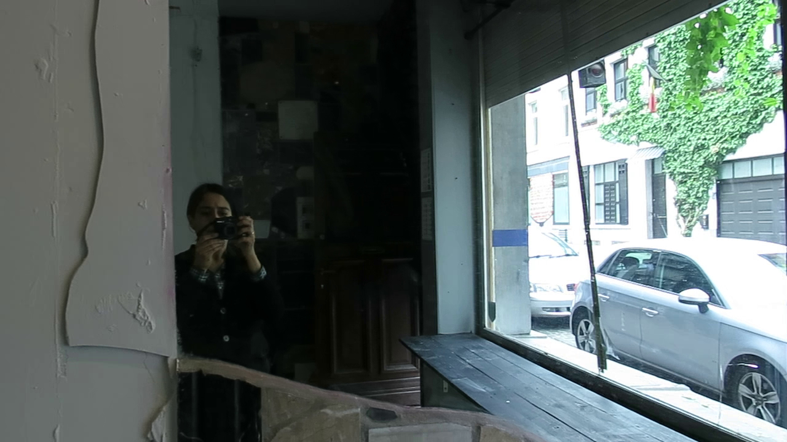

HECTOLITRE - June 2020
Residency at Trait d'Union

[EN]
Maya Dalinsky is a dance artist, translator and researcher working at the intersection of choreography and digital media. In June 2020, she will introduce her videowalking practice to the spaces of Trait d'Union.
With videowalking, spectators use a pre-recorded trajectory replayed on a digital device (tablet, smartphone, or other integrated mobile screen) to explore an environment and their perception of it in situ. The player is asked to accurately retrace or reproduce the movements and images on screen by layering the video over real space and imagining they shoot what they see. Player-spectators embody and re-interpret the original cameraperson’s subjective experience, and guided by their screens, inhabit a liminal space where cinematography is enacted as a form of choreography.
In this introductory, solo research residency, Maya will reconnect with the fundamental practices behind her approach to videowalking, which stem for the most part from perception-related dance scores and exercises.This work will be documented and accompanied in writing through a diary.
[FR]
Maya Dalinsky travaille en tant que danseuse, traductrice et chercheuse au croisement de la chorégraphie et du numérique. En juin 2020, elle entame une première étape de recherche en 'videowalking' (balade numérique) dans les espaces de Trait d'Union.
Le videowalking invite les spectateurs à superposer image et réalité au moyen d'une tablette (ou autre écran mobile) afin de découvrir un lieu et leur perception de ce lieu in situ. Le spectateur tente de ré-engager et reproduire les gestes et les images de l'écran dans la vie réelle en se laissant guider par la vidéo et s'imaginant qu'il est lui-même auteur de ces images. Ainsi, le spectateur incarne et interprète l'expérience préalable du cameraman original, et par le biais de l'écran, habite le seuil où la cinématographie devient chorégraphie.
Lors de cette première résidence de recherche en solo, Maya vient se ressourcer dans les pratiques de base qui constituent son approche au videowalking. Ces pratiques sont issues pour la plupart de la danse et des explorations perceptuelles liées au travail somatique et l'improvisation. La recherche sera documentée et accompagnée sous forme de journal intime, le "Diary of a Videowalker".